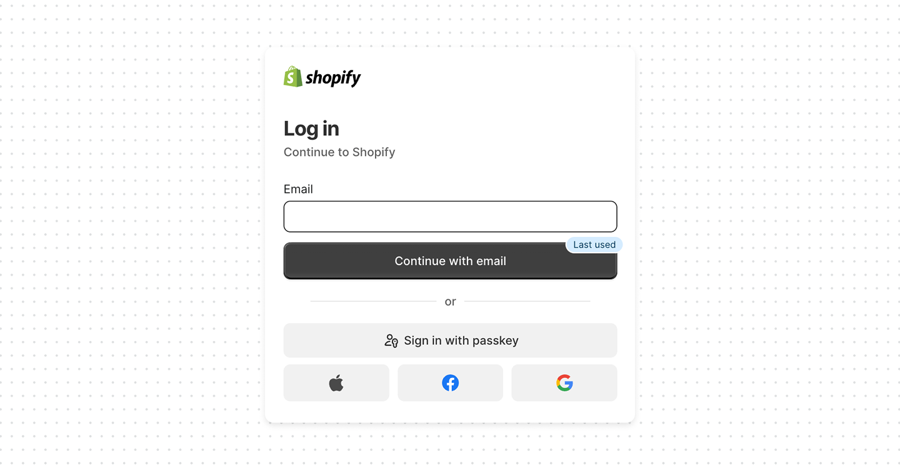
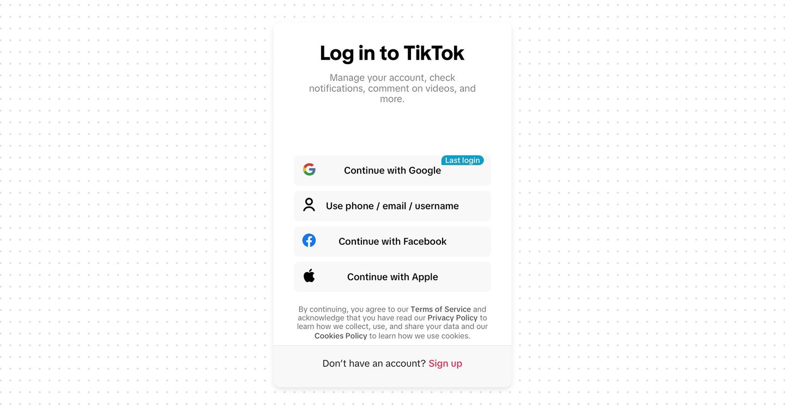
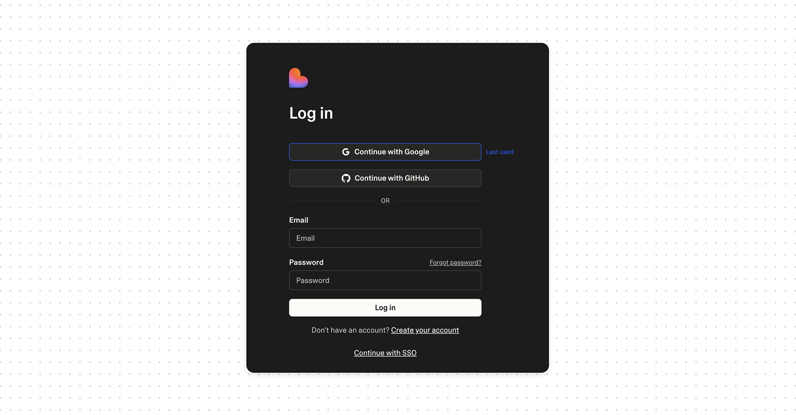
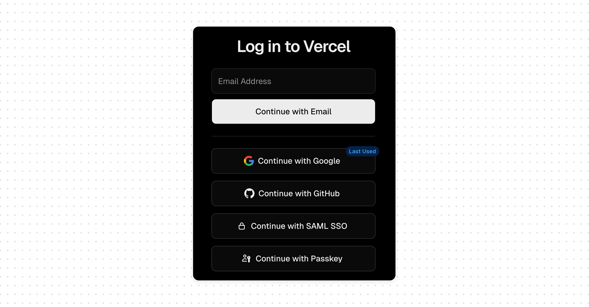

Is the "last used" login method indicator safe?

Most login screens rarely have a single in with social media account. Google, Apple, GitHub, email and password, passkey, SSO. Returning user is often looking at four or five buttons, trying to remember which one they picked the first time.
Most of them don't remember. So they guess. And when they guess wrong, sign in with Google when the account was actually created with email, they either hit an error, or worse, silently create a second account
The "last used" label fixes this. A small badge next to one method that says "Last used", "Last login", or "Last time" tells the returning user exactly where to click.
What good UX looks like
- Keep the hint on the device. Set it client-side after a successful login. It should reflect that browser's history, nothing more.
- Never derive it from a submitted email before authentication. If typing an identifier reveals the last method or whether an account exists, that's enumeration. The hint must come from local state, not a server lookup keyed on identity.




Bottom line
The "last used" login indicator is good UX and, done right, perfectly safe. It's a local hint about a method, not a server-side answer about an identity. Keep it on the device, never let an entered email reveal it, and the pattern stays a convenience instead of becoming an enumeration leak.
The safety of this pattern comes down to one thing: where the hint is calculated.
When it's stored on the device (a cookie or local value set after a successful login in that browser) – it's low risk. It only says "on this browser, the last method used was X". It doesn't reveal a password, and it doesn't tell an attacker anything they couldn't already learn by sitting at that device.
The dangerous version is when the hint is calculated on the server from an entered identifier. If a user types an email and the page responds with "you last signed in with Google", you've just built an account enumeration endpoint. An unauthenticated party can now probe email addresses and learn two things at once: that an account exists, and which identity provider it uses. That second detail is also a gift to phishing, it tells an attacker exactly which provider's login to spoof.
That said, this is safest when paired with broader account protection measures such as suspicious-activity detection, remote session revocation, and an advanced option to disable the feature entirely.